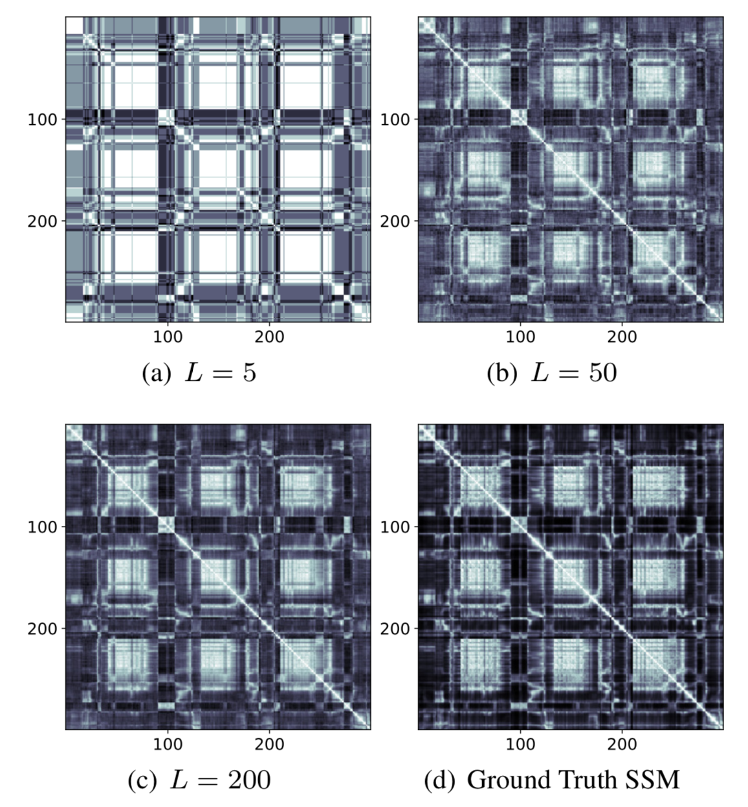

Boosted Locality Sensitive Hashing: Discriminative Binary Codes for Source Separation
Abstract
Speech enhancement tasks have seen significant improvements with the advance of deep learning technology, but with the cost of increased computational complexity. In this study, we propose an adaptive boosting approach to learning locality sensitive hash codes, which represent audio spectra efficiently. We use the learned hash codes for single-channel speech denoising tasks as an alternative to a complex machine learning model, particularly to address the resource-constrained environments. Our adaptive boosting algorithm learns simple logistic regressors as the weak learners. Once trained, their binary classification results transform each spectrum of test noisy speech into a bit string. Simple bitwise operations calculate Hamming distance to find the K-nearest matching frames in the dictionary of training noisy speech spectra, whose associated ideal binary masks are averaged to estimate the denoising mask for that test mixture. Our proposed learning algorithm differs from AdaBoost in the sense that the projections are trained to minimize the distances between the self-similarity matrix of the hash codes and that of the original spectra, rather than the misclassification rate. We evaluate our discriminative hash codes on the TIMIT corpus with various noise types, and show comparative performance to deep learning methods in terms of denoising performance and complexity.
|  | |
| Fig 1. KNN-based source separation process using LSH hash codes. | Fig 2. Self-affinity matrices of varying L hash codes and original time-frequency bins. |
Audio examples
Validation set
First paragraph.
Second paragraph.
Eg. Speaker 1
Eg. Speaker 2